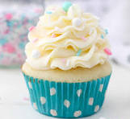
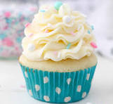

pictures of my cupcake

my fresh straberry


Elizabeth Eden Harris (born May 31, 1997), known professionally as Cupcakke (often stylized as cupcakKe; pronounced /ˈkʌpkeɪk/ "cupcake"), is an American rapper and singer-songwriter known for her hypersexualized, brazen, and often comical persona and music.
United Kingdom English muffins are usually referred to simply as muffins in the UK; sweet American-style cupcake-shaped muffins are occasionally referred to as American muffins to differentiate. They are usually consumed with tea or coffee, and sometimes feature in afternoon tea served in UK hotels.
Elizabeth In essence, calling someone a “cupcake” is saying they're “soft and sweet”. Therefore, as a term of endearment between lovers, it means something similar to “Sweetie”, “Sugar” or
In essence, calling someone a “cupcake” is saying they're “soft and sweet”. Therefore, as a term of endearment between lovers, it means something similar to “Sweetie”, “Sugar” or
Cupcake are small, tasty snack cakes that are favored for their portability and portion-control. They are batter cakes baked in a cup-shaped foil or temperature resistant paper. A cupcake can be prepared from a variety of formulations and can be decorated with cream and icings.
pictures of my cupcake

my fresh straberry